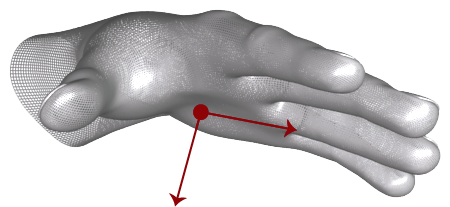
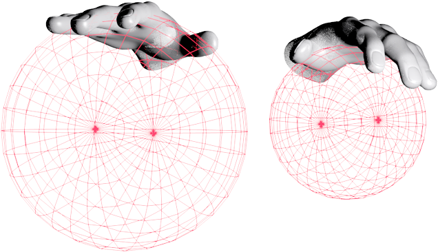

Hand¶
Methods:
- Hand()
- arm()
- basis()
- confidence()
- direction()
- equals(Hand arg0)
- finger(int id)
- fingers()
- frame()
- grabAngle()
- grabStrength()
- id()
- invalid()
- isLeft()
- isRight()
- isValid()
- palmNormal()
- palmPosition()
- palmVelocity()
- palmWidth()
- pinchDistance()
- pinchStrength()
- pointable(int id)
- pointables()
- rotationAngle(Frame sinceFrame)
- rotationAngle(Frame sinceFrame, Vector axis)
- rotationAxis(Frame sinceFrame)
- rotationMatrix(Frame sinceFrame)
- rotationProbability(Frame sinceFrame)
- scaleFactor(Frame sinceFrame)
- scaleProbability(Frame sinceFrame)
- sphereCenter()
- sphereRadius()
- stabilizedPalmPosition()
- timeVisible()
- toString()
- translation(Frame sinceFrame)
- translationProbability(Frame sinceFrame)
- wristPosition()
The Hand class reports the physical characteristics of a detected hand.
Hand tracking data includes a palm position and velocity; vectors for the palm normal and direction to the fingers; properties of a sphere fit to the hand; and lists of the attached fingers.
Get Hand objects from a Frame object:
Frame frame = controller.frame(); // controller is a Controller object HandList hands = frame.hands(); Hand firstHand = hands.get(0);Note that Hand objects can be invalid, which means that they do not contain valid tracking data and do not correspond to a physical entity. Invalid Hand objects can be the result of asking for a Hand object using an ID from an earlier frame when no Hand objects with that ID exist in the current frame. A Hand object created from the Hand constructor is also invalid. Test for validity with the Hand::isValid() function.
Public Functions
- Since
- 1.0
Public Static FunctionsArm arm()The arm to which this hand is attached.
If the arm is not completely in view, Arm attributes are estimated based on the attributes of entities that are in view combined with typical human anatomy.
Hand hand = frame.hands().frontmost(); Arm arm = hand.arm();
- Return
- The Arm object for this hand.
- Since
- 2.0.3
Matrix basis()The orientation of the hand as a basis matrix.
The basis is defined as follows:
xAxis Positive in the direction of the pinky
yAxis Positive above the hand
zAxis Positive in the direction of the wrist
Note: Since the left hand is a mirror of the right hand, the basis matrix will be left-handed for left hands.
Matrix basis = hand.basis(); Vector xBasis = basis.getXBasis(); Vector yBasis = basis.getYBasis(); Vector zBasis = basis.getZBasis();
- Return
- The basis of the hand as a matrix.
- Since
- 2.0
float confidence()How confident we are with a given hand pose.
The confidence level ranges between 0.0 and 1.0 inclusive.
float confidence = hand.confidence();
- Since
- 2.0
Vector direction()The direction from the palm position toward the fingers.
The direction is expressed as a unit vector pointing in the same direction as the directed line from the palm position to the fingers.
You can use the palm direction vector to compute the pitch and yaw angles of the palm with respect to the horizontal plane:
float pitch = hand.direction().pitch(); float yaw = hand.direction().yaw(); float roll = hand.palmNormal().roll();
- Return
- The Vector pointing from the palm position toward the fingers.
- Since
- 1.0
boolean equals(Hand arg0)Finger finger(int id)The Finger object with the specified ID attached to this hand.
Use the Hand::finger() function to retrieve a Finger object attached to this hand using an ID value obtained from a previous frame. This function always returns a Finger object, but if no finger with the specified ID is present, an invalid Finger object is returned.
Finger fingerOnHandByID = hand.finger(fingerID);Note that ID values persist across frames, but only until tracking of a particular object is lost. If tracking of a finger is lost and subsequently regained, the new Finger object representing that finger may have a different ID than that representing the finger in an earlier frame.
FingerList fingers()The list of Finger objects detected in this frame that are attached to this hand, given in order from thumb to pinky.
The list cannot be empty.
Use PointableList::extended() to remove non-extended fingers from the list.
// hand is a Hand object PointableList pointables = hand.pointables(); FingerList fingers = hand.fingers();
- Return
- The FingerList containing all Finger objects attached to this hand.
- Since
- 1.0
Frame frame()float grabAngle()The angle between the fingers and the hand of a grab hand pose.
The angle is computed by looking at the angle between the direction of the 4 fingers and the direction of the hand. Thumb is not considered when computing the angle. The angle is 0 radian for an open hand, and reaches pi radians when the pose is a tight fist.
- Return
- The angle of a grab hand pose between 0 and pi radians (0 and 180 degrees).
- Since
- 3.0
float grabStrength()Hand()int id()A unique ID assigned to this Hand object, whose value remains the same across consecutive frames while the tracked hand remains visible.
If tracking is lost (for example, when a hand is occluded by another hand or when it is withdrawn from or reaches the edge of the Leap Motion Controller field of view), the Leap Motion software may assign a new ID when it detects the hand in a future frame.
Use the ID value with the Frame::hand() function to find this Hand object in future frames:
Hand knownHand = frame.hand(handID);
- Return
- The ID of this hand.
- Since
- 1.0
boolean isLeft()Identifies whether this Hand is a left hand.
String handName = hand.isLeft() ? "Left hand" : "Right hand";
- Return
- True if the hand is identified as a left hand.
- Since
- 2.0
boolean isRight()Identifies whether this Hand is a right hand.
if(hand.isRight()){ // .. Do right handed stuff }
- Return
- True if the hand is identified as a right hand.
- Since
- 2.0
boolean isValid()Vector palmNormal()The normal vector to the palm.
If your hand is flat, this vector will point downward, or “out” of the front surface of your palm.

The direction is expressed as a unit vector pointing in the same direction as the palm normal (that is, a vector orthogonal to the palm).
You can use the palm normal vector to compute the roll angle of the palm with respect to the horizontal plane:
float pitch = hand.direction().pitch(); float yaw = hand.direction().yaw(); float roll = hand.palmNormal().roll();
- Return
- The Vector normal to the plane formed by the palm.
- Since
- 1.0
Vector palmPosition()The center position of the palm in millimeters from the Leap Motion Controller origin.
Vector handCenter = hand.palmPosition();
- Return
- The Vector representing the coordinates of the palm position.
- Since
- 1.0
Vector palmVelocity()The rate of change of the palm position in millimeters/second.
Vector handSpeed = hand.palmVelocity();
- Return
- The Vector representing the coordinates of the palm velocity.
- Since
- 1.0
float palmWidth()The estimated width of the palm when the hand is in a flat position.
float handWidth = hand.palmWidth();
- Return
- The width of the palm in millimeters
- Since
- 2.0
float pinchDistance()The distance between the thumb and index finger of a pinch hand pose.
The distance is computed by looking at the shortest distance between the last 2 phalanges of the thumb and those of the index finger. This pinch measurement only takes thumb and index finger into account.
- Return
- The distance between the thumb and index finger of a pinch hand pose in millimeters.
- Since
- 3.0
float pinchStrength()Pointable pointable(int id)The Pointable object with the specified ID associated with this hand.
Use the Hand::pointable() function to retrieve a Pointable object associated with this hand using an ID value obtained from a previous frame. This function always returns a Pointable object, but if no finger with the specified ID is present, an invalid Pointable object is returned.
Pointable knownPointable = hand.pointable(pointableID);Note that the ID values assigned to fingers are based on the hand ID. Hand IDs persist across frames, but only until tracking of that hand is lost. If tracking of the hand is lost and subsequently regained, the new Hand object and its child Finger objects will have a different ID than in an earlier frame.
PointableList pointables()The list of Pointable objects detected in this frame that are associated with this hand, given in arbitrary order.
The list will always contain 5 fingers.
Use PointableList::extended() to remove non-extended fingers from the list.
// hand is a Hand object PointableList pointables = hand.pointables(); FingerList fingers = hand.fingers();
- Return
- The PointableList containing all Pointable objects associated with this hand.
- Since
- 1.0
float rotationAngle(Frame sinceFrame)The angle of rotation around the rotation axis derived from the change in orientation of this hand, and any associated fingers, between the current frame and the specified frame.
float rotationOfHand = hand.rotationAngle(startFrame);
- Return
- A positive value representing the heuristically determined rotational change of the hand between the current frame and that specified in the sinceFrame parameter.
- Parameters
- sinceFrame -
The starting frame for computing the relative rotation.
The angle of rotation around the specified axis derived from the change in orientation of this hand, and any associated fingers, between the current frame and the specified frame.
float rotationAroundYAxis = hand.rotationAngle(startFrame, Vector.yAxis());
- Return
- A value representing the heuristically determined rotational change of the hand between the current frame and that specified in the sinceFrame parameter around the specified axis.
- Parameters
- sinceFrame -
The starting frame for computing the relative rotation.
- axis -
The axis to measure rotation around.
The axis of rotation derived from the change in orientation of this hand, and any associated fingers, between the current frame and the specified frame.
Vector axisOfHandRotation = hand.rotationAxis(startFrame);
- Return
- A normalized direction Vector representing the heuristically determined axis of rotational change of the hand between the current frame and that specified in the sinceFrame parameter.
- Parameters
- sinceFrame -
The starting frame for computing the relative rotation.
The transform matrix expressing the rotation derived from the change in orientation of this hand, and any associated fingers, between the current frame and the specified frame.
Matrix handRotationTransform = hand.rotationMatrix(startFrame);
- Return
- A transformation Matrix representing the heuristically determined rotational change of the hand between the current frame and that specified in the sinceFrame parameter.
- Parameters
- sinceFrame -
The starting frame for computing the relative rotation.
float rotationProbability(Frame sinceFrame)The estimated probability that the hand motion between the current frame and the specified frame is intended to be a rotating motion.
float rotationIntentFactor = hand.rotationProbability(startFrame);
- Return
- A value between 0 and 1 representing the estimated probability that the hand motion between the current frame and the specified frame is intended to be a rotating motion.
- Parameters
- sinceFrame -
The starting frame for computing the relative rotation.
float scaleFactor(Frame sinceFrame)The scale factor derived from this hand’s motion between the current frame and the specified frame.
float handScaleMotion = hand.scaleFactor(startFrame);
- Return
- A positive value representing the heuristically determined scaling change ratio of the hand between the current frame and that specified in the sinceFrame parameter.
- Parameters
- sinceFrame -
The starting frame for computing the relative scaling.
float scaleProbability(Frame sinceFrame)The estimated probability that the hand motion between the current frame and the specified frame is intended to be a scaling motion.
float scaleIntentFactor = hand.scaleProbability(startFrame);
- Return
- A value between 0 and 1 representing the estimated probability that the hand motion between the current frame and the specified frame is intended to be a scaling motion.
- Parameters
- sinceFrame -
The starting frame for computing the relative scaling.
Vector sphereCenter()The center of a sphere fit to the curvature of this hand.
Vector sphereCenter = hand.sphereCenter();This sphere is placed roughly as if the hand were holding a ball.

- Return
- The Vector representing the center position of the sphere.
- Since
- 1.0
float sphereRadius()The radius of a sphere fit to the curvature of this hand.
This sphere is placed roughly as if the hand were holding a ball. Thus the size of the sphere decreases as the fingers are curled into a fist.
float sphereDiameter = 2 * hand.sphereRadius();
- Return
- The radius of the sphere in millimeters.
- Since
- 1.0
Vector stabilizedPalmPosition()The stabilized palm position of this Hand.
Smoothing and stabilization is performed in order to make this value more suitable for interaction with 2D content. The stabilized position lags behind the palm position by a variable amount, depending primarily on the speed of movement.
Vector filteredHandPosition = hand.stabilizedPalmPosition();
- Return
- A modified palm position of this Hand object with some additional smoothing and stabilization applied.
- Since
- 1.0
float timeVisible()The duration of time this Hand has been visible to the Leap Motion Controller.
float lifetimeOfThisHandObject = hand.timeVisible();
- Return
- The duration (in seconds) that this Hand has been tracked.
- Since
- 1.0
String toString()
The change of position of this hand between the current frame and the specified frame.
Vector linearHandMovement = hand.translation(startFrame);
- Return
- A Vector representing the heuristically determined change in hand position between the current frame and that specified in the sinceFrame parameter.
- Parameters
- sinceFrame -
The starting frame for computing the translation.
float translationProbability(Frame sinceFrame)The estimated probability that the hand motion between the current frame and the specified frame is intended to be a translating motion.
float translationIntentFactor = hand.translationProbability(startFrame);
- Return
- A value between 0 and 1 representing the estimated probability that the hand motion between the current frame and the specified frame is intended to be a translating motion.
- Parameters
- sinceFrame -
The starting frame for computing the translation.
Vector wristPosition()The position of the wrist of this hand.
- Return
- A vector containing the coordinates of the wrist position in millimeters.
- Since
- 2.0.3
Hand invalid()Returns an invalid Hand object.
if (!hand.equals(Hand.invalid())) { //Process hand data... }You can use the instance returned by this function in comparisons testing whether a given Hand instance is valid or invalid. (You can also use the Hand::isValid() function.)
- Return
- The invalid Hand instance.
- Since
- 1.0